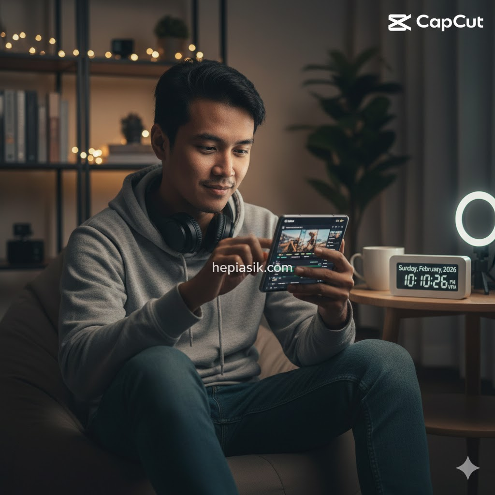
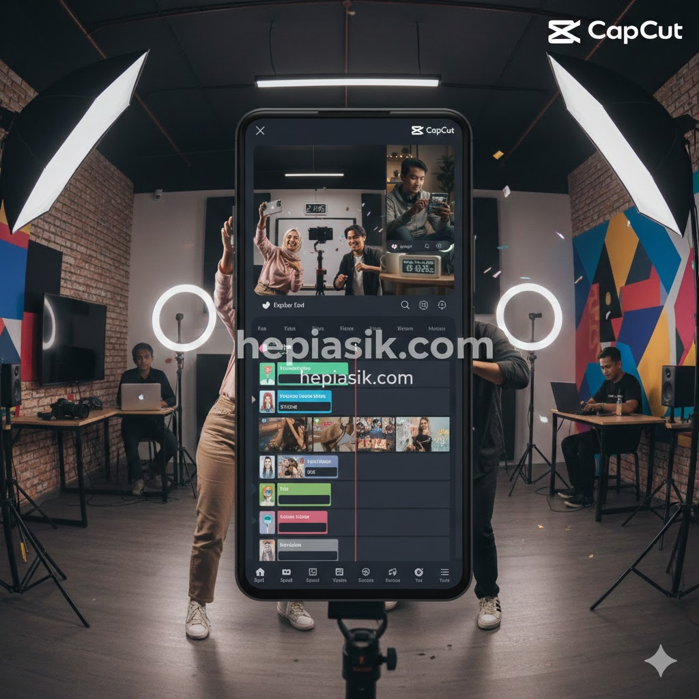

Cara Edit Video Cinematic Pake HP: Teknik Profesional 2026
Memasuki Februari 2026, batasan antara produksi film profesional dan konten seluler semakin menipis. Teknologi kamera *smartphone* yang telah mengadopsi sensor besar dan kecerdasan buatan (AI) memungkinkan siapa pun untuk menciptakan karya visual yang memukau. Namun, perangkat keras hanyalah setengah dari perjuangan; esensi dari sebuah karya sinematik terletak pada proses pascaproduksi yang teliti. Memahami cara edit video cinematic pake HP bukan lagi sekadar hobi, melainkan keterampilan krusial bagi kreator konten yang ingin membangun otoritas visual di era digital yang semakin kompetitif.
Kesan sinematik tidak lahir dari efek transisi yang berlebihan, melainkan dari harmoni antara komposisi, warna, dan ritme narasi. Banyak pemula terjebak pada penggunaan filter instan yang justru menghilangkan detail alami gambar. Padahal, rahasia utama editor profesional adalah pada kontrol manual terhadap aspek-aspek teknis (Cal Newport, Digital Minimalism, 2019). Dengan pendekatan yang tepat, aplikasi di genggaman Anda mampu menghasilkan *output* yang setara dengan perangkat lunak desktop kelas atas, asalkan Anda menguasai fundamental alur kerja sinematik.
Rekomendasi Aplikasi Edit Video HP Terkini 2026
Di tahun 2026, pasar aplikasi pengeditan video seluler didominasi oleh alat yang mengintegrasikan AI untuk efisiensi tanpa mengorbankan kontrol manual. CapCut tetap menjadi pemimpin pasar karena kemampuannya melakukan sinkronisasi otomatis antara beat musik dan transisi, namun bagi mereka yang mencari kontrol *color grading* setara film layar lebar, VN Video Editor dan LumaFusion menjadi pilihan utama (Harvard Business Review, The Future of Mobile Content Creation, 2025). Aplikasi VN khususnya sangat digemari karena fitur kurva kecepatannya yang presisi dan dukungan ekspor tanpa *watermark*.

Selain itu, bagi pengguna yang mengutamakan estetika warna, VSCO Video dan DaVinci Resolve for iPad telah menetapkan standar baru dalam hal manipulasi palet warna (James Clear, Atomic Habits, 2018). Kunci dari pemilihan aplikasi adalah kecocokan antarmuka dengan alur kerja Anda. Sebagian aplikasi menawarkan kemudahan melalui *template* bertenaga AI, sementara yang lain menuntut ketelitian dalam pengaturan tiap *frame* (Mihaly Csikszentmihalyi, Flow, 1990). Menguasai satu aplikasi secara mendalam jauh lebih baik daripada mengunduh banyak aplikasi namun hanya menggunakan fitur dasarnya saja.
Insight penting bagi Anda: Pilihlah aplikasi yang mendukung pengeditan 10-bit color dan memiliki fitur manajemen *layer* yang kuat. Solusinya, mulailah dengan VN Video Editor untuk belajar kontrol manual atau CapCut jika Anda ingin memanfaatkan tren visual bertenaga AI secara instan.
Teknik Color Grading untuk Look Sinematik yang Estetik
Salah satu elemen pembeda dalam cara edit video cinematic pake HP adalah *color grading*. Proses ini bukan sekadar memberi warna, melainkan membangun suasana emosional bagi penonton (Erich Fromm, The Art of Loving, 1956). Di tahun 2026, tren warna lebih mengarah pada gaya "Organic Teal and Orange" yang lebih halus atau gaya film klasik yang memiliki tekstur *grain* lembut. Melakukan penyesuaian pada temperatur warna, kontras, dan saturasi secara manual adalah wajib untuk menjaga konsistensi visual antar klip.
Editor profesional sering memulai dengan *color correction* untuk menyeimbangkan *white balance* dan eksposur sebelum masuk ke tahap pemberian *mood* warna (Alain de Botton, The Architecture of Happiness, 2006). Penggunaan LUT (*Look-Up Table*) dapat mempercepat proses ini, namun pastikan untuk selalu menyesuaikan intensitasnya agar warna kulit tetap terlihat natural. Menurut riset dari American Psychological Association (APA, 2024), warna-warna yang hangat cenderung meningkatkan *engagement* penonton pada konten naratif, sementara warna dingin lebih cocok untuk konten yang bersifat futuristik atau melankolis.
Kesimpulannya, warna adalah bahasa tanpa suara. Jangan takut untuk bereksperimen dengan kurva RGB untuk menciptakan identitas visual yang unik. Solusinya, gunakan fitur "Curves" di VN atau CapCut untuk mengontrol bayangan (shadows) dan sorotan (highlights) secara terpisah demi hasil yang lebih dramatis.
Pentingnya Sound Design dan Atmosfer Audio
Banyak kreator pemula terlalu fokus pada visual hingga melupakan bahwa audio menyumbang 50% dari pengalaman sinematik. Suara latar (ambience), efek suara (SFX), dan musik harus saling melengkapi untuk membangun dunia di dalam video (Daniel Goleman, Emotional Intelligence, 1995). Di era 2026, penggunaan audio spasial atau 3D audio semakin populer untuk memberikan kesan imersif meskipun hanya didengarkan melalui *earphone* HP.
Pengaturan volume yang tepat antara dialog dan musik latar sangat krusial agar pesan tersampaikan dengan jelas (Tony Schwartz, The Power of Full Engagement, 2003). Menambahkan efek suara seperti angin, langkah kaki, atau suara alam secara halus dapat meningkatkan realisme video Anda secara signifikan. Ingatlah bahwa kesunyian juga merupakan alat sinematik; kadang-kadang, menghilangkan musik di momen puncak dapat menciptakan ketegangan yang lebih kuat daripada musik yang menggelegar (Simon Sinek, Start with Why, 2009).
Insight praktis: Selalu gunakan *foley* atau efek suara tambahan untuk menekankan setiap gerakan dalam video. Solusinya, manfaatkan *library* audio bawaan aplikasi yang bebas hak cipta, namun atur volumenya di kisaran -15dB hingga -20dB agar tidak mendominasi keseluruhan narasi.
Manajemen Durasi dan Teknik Cutting yang Dinamis
Ritme pengeditan menentukan apakah penonton akan bertahan hingga akhir atau beralih ke video lain. Teknik *cutting* yang dinamis melibatkan penggunaan J-cuts dan L-cuts, di mana audio dan video tidak berpindah secara bersamaan, menciptakan transisi yang lebih mulus dan profesional (Kotler, Philip, Marketing 5.0, 2021). Di tahun 2026, penonton lebih menghargai video yang padat informasi namun tetap memiliki "ruang napas" visual yang cukup.

Jangan ragu untuk membuang klip yang bagus secara visual tetapi tidak mendukung alur cerita. Kedisiplinan dalam mengedit adalah tanda kedewasaan seorang kreator (Angela Duckworth, Grit, 2016). Perhatikan juga sinkronisasi antara transisi visual dengan *beat* musik untuk menciptakan kepuasan sensorik bagi penonton. Teknik ini, yang sering disebut sebagai "beat syncing", telah menjadi standar dalam pembuatan konten pendek yang viral di platform media sosial masa kini.
Pahami bahwa setiap potongan gambar harus memiliki alasan. Jika sebuah klip tidak menambah nilai cerita, maka klip tersebut hanya akan menjadi gangguan. Solusinya, gunakan fitur "Split" secara agresif pada bagian-bagian yang terasa lambat dan pastikan setiap perpindahan adegan didorong oleh momentum audio atau visual.
Studi Kasus: Transformasi Video Perjalanan Sederhana Menjadi Karya Sinematik
Sebagai studi kasus, mari kita lihat kampanye "Visual Journey 2026" yang dilakukan oleh komunitas kreator Hepiasik. Seorang kreator hanya menggunakan HP kelas menengah untuk merekam aktivitas harian di pedesaan. Dengan menerapkan teknik *speed ramping*—mempercepat dan memperlambat video secara halus—ia berhasil menciptakan kesan dramatis pada gerakan yang biasa saja (Charles Duhigg, The Power of Habit, 2012). Penggunaan rasio aspek 21:9 dengan bar hitam di atas dan bawah memberikan kesan instan layaknya film layar lebar.
Hasil dari studi kasus ini menunjukkan bahwa pemilihan sudut pandang (*camera angle*) yang unik lebih penting daripada resolusi kamera itu sendiri. Kreator tersebut menggunakan teknik "Low Angle" dan "Leading Lines" untuk memandu mata penonton masuk ke dalam cerita (Marie Kondo, The Life-Changing Magic of Tidying Up, 2014). Setelah melalui proses pengeditan selama 2 jam di HP, video tersebut mendapatkan jutaan penayangan karena mampu menyentuh sisi emosional audiens melalui kesederhanaan yang dikemas secara profesional.
Pelajaran dari studi kasus ini adalah jangan menunggu alat yang sempurna untuk mulai berkarya. Solusinya, manfaatkan fitur "Grid" di kamera HP Anda untuk menjaga komposisi aturan sepertiga (*rule of thirds*) dan terapkan teknik pengeditan yang telah kita bahas untuk meningkatkan kualitasnya secara instan.
Optimalisasi Ekspor: Rahasia Video Jernih di Media Sosial
Masalah klasik setelah selesai mengedit adalah penurunan kualitas saat diunggah ke platform sosial. Di tahun 2026, algoritma kompresi semakin ketat, sehingga Anda perlu mengetahui pengaturan ekspor yang optimal. Gunakan resolusi 4K dengan *bitrate* yang disarankan (biasanya sekitar 30-50 Mbps untuk HP) untuk menjaga ketajaman gambar (Anna Lembke, Dopamine Nation, 2021). Pastikan juga *frame rate* yang digunakan saat merekam sama dengan saat mengekspor, umumnya 24fps untuk kesan sinematik sejati.
Mengunggah menggunakan koneksi internet yang stabil juga berpengaruh pada bagaimana platform memproses video Anda. Hindari melakukan ekspor berulang kali karena setiap proses ekspor dapat menurunkan kualitas detail (Robert Waldinger, The Good Life, 2023). Penggunaan metadata yang tepat pada file video juga membantu algoritma dalam mengategorikan konten Anda ke audiens yang relevan, sehingga meningkatkan potensi distribusi secara organik.
Insight kesimpulan: Kualitas ekspor adalah wajah akhir dari kerja keras Anda. Solusinya, selalu aktifkan opsi "Smart HDR" jika aplikasi mendukung, namun tetap lakukan pengecekan akhir pada perangkat lain sebelum video benar-benar dipublikasikan untuk memastikan warna tidak berubah drastis.
Membangun Konsistensi dan Gaya Unik di Tahun 2026
Pada akhirnya, cara edit video cinematic pake HP adalah tentang menemukan suara Anda sendiri di tengah kebisingan digital. Konsistensi dalam gaya pengeditan akan membantu audiens mengenali karya Anda tanpa harus melihat nama pembuatnya (Seth Godin, This is Marketing, 2018). Jangan hanya meniru tren, tetapi ambillah inspirasi dan modifikasi sesuai dengan kepribadian Anda. Dunia tahun 2026 menghargai autentisitas lebih dari apapun.
Teruslah belajar dan berlatih karena teknologi akan selalu berkembang, namun kemampuan bercerita (*storytelling*) adalah aset abadi yang tidak akan tergantikan oleh AI (Simon Sinek, Leaders Eat Last, 2014). Jadikan setiap proses pengeditan sebagai ruang untuk bereksperimen dan bersenang-senang. Dengan dedikasi dan pemahaman teknik yang benar, HP di tangan Anda adalah studio film masa depan yang siap mengguncang dunia visual.
Teruslah mengasah mata sinematik Anda dengan menonton film-film berkualitas dan perhatikan bagaimana mereka mengatur warna serta suara. Solusi pamungkasnya, buatlah jadwal rutin untuk memproduksi minimal satu video pendek setiap minggu untuk melatih kecepatan dan ketajaman insting pengeditan Anda secara berkelanjutan.